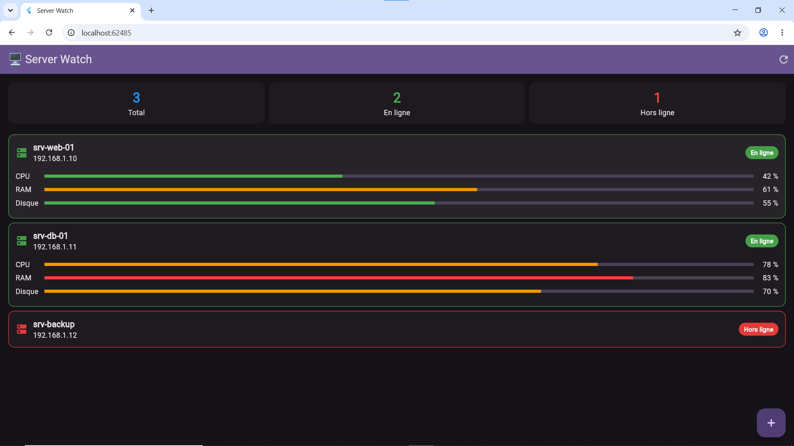

.png)
Kali Linux
Distribution spécialisée en tests de sécurité et simulation d'attaques (scan réseau, tests d'intrusion).
Je suis Kanto, étudiante âgée de 18 ans en deuxième année de licence à l'École Nationale d'Informatique de Fianarantsoa, dans le parcours ISII (Ingénierie des Systèmes et d'Information Intégrée). Passionnée par l'infrastructure et la sécurité, je me spécialise dans l'installation, la supervision et la surveillance des systèmes.
Projet, Alternance, Stage ; travaillons ensemble !
Curieuse et rigoureuse, j'acquiers des compétences solides à la fois dans le développement et dans l'administration système et réseau. Mon profil s'oriente particulièrement vers la mise en place d'environnements sécurisés et le monitoring proactif. Je suis actuellement à la recherche d'un stage pour mettre en pratique mes compétences techniques.
Distribution spécialisée en tests de sécurité et simulation d'attaques (scan réseau, tests d'intrusion).

Gestion d'environnements d'entreprise et administration des rôles AD DS (Active Directory Domain Services).

Contrôle de version distribué, suivi d'historique et collaboration sur le code source.

Plateforme open-source de sécurité, analyse de journaux (logs) et détection d'incidents en temps réel.

Maitrise de HTML, CSS, JavaScript, PHP et notions de développement mobile en Dart (Flutter).

Conception et manipulation de données avec MySQL, PostgreSQL et SQLite.

Application mobile pour surveiller l'état des serveurs, de leurs
consommation de CPU, de RAM et leur Disque.
Un projet de développement en cours avec la langage Dart (Flutter)
qui m'est utile pour surveiller l'état de mes serveurs.
C'est aussi un projet personnel mais je peux également l'adapter
selon le cas de son utilisation.
Stage de fin d'année qui est basé sur l'Administration système,
l'administration réseau et la surveillance.
Développement de connaissance concernant l'outil Wazuh SIEM qui
est un outil de surveillance très connu et manipulable.
Formation approfondie en génie logiciel, réseaux, administration système et sécurité informatique.
Formation approfondie sur l'administration système, utilisation
des serveurs d'administration et des outils concerné.
Cursus approfondi en administration réseau.
Formation pour débuter dans le monde de l'informatique, acquisition des expériences de base utiles dans le domaine informatique.
Une opportunité de stage ou un projet à confier ? N'hésitez pas à me contacter !
Envoyer un e-mail